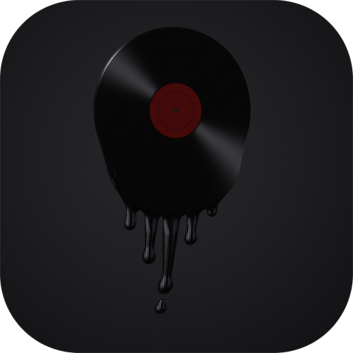

Drag the points · arrow keys on a point nudge it

Press / anytime to search · F for full screen
© 2026 Volodya.rua · Terms · Privacy · Licenses
NetherFlow is a free, open-source player for personal use. It plays songs from YouTube, podcasts from their own hosts and free audiobooks from the Internet Archive, and shows lyrics from third-party services. It doesn't host any music, podcasts or lyrics, and it isn't affiliated with any of those services. It may skip or block ads in their players. It can also save songs on your device for offline listening by downloading them from YouTube, which YouTube's terms don't allow (and the rights holders or the law where you live may not either), and make short story clips of a song to share: those choices are yours. A playlist you choose to edit together is kept, encrypted, on public relays, and anyone with its link can see and change it. There are no accounts and no tracking.
By continuing you agree to the Terms of Use and the Privacy Policy.
You need to accept the terms to use NetherFlow.